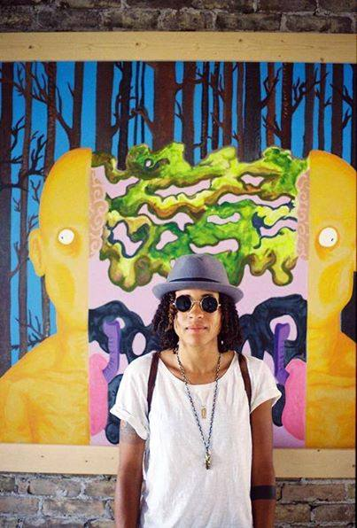

Hello,
I was cleaning out my closet the other day, literally, and figuratively I suppose, and I came across an old journal entry I had written a couple of years ago. I was in a particularly dark place in my life, especially creatively. I could see the despair on the page. The words were saturated with frustration and a certain pining to do something I was passionate about. I wrote "I want something that's mine. Something like an art show that I can be proud of. A piece of something." And then I proceeded to rip myself, my writing and my magazine to shreds. I have always had a tumultuous relationship with my writing. What is it with creatives and self-deprecation? Must be the vulnerability of putting something out there in the world that you pour your heart and soul into. It's a hard thing to do. It was hard to read, and I actually burst into tears for the girl on the pages before me. Paging through more, I also came across a page where I wrote "amfm is dead." Let me tell you something amfm is NOT dead. It is very much alive. If anything, amfm has been reborn, along with myself.
Reading those words now affected me in the way they did because I am not the same person today who wrote them then. In a way, I have begun to think of the magazine as an extension of myself. I always hesitated to think of myself as an artist in the "traditional sense," my web pages my canvas, I always say, but we are all art. We all have passions, and things we dream of doing, yet fear, or sometimes our own darkness gets in the way. One of my favorite quotes is "Decide that you want it more than you are afraid of it." by Bill Cosby (jello makes you wise). I could see on the page before me that I so desperately wanted it...and I am so glad for the girl who wrote those things that I proved her wrong. In talking to a lot of artists, even some in this issue, they have shared similar struggles. They have also inspired me in ways they may never know, that's what art is supposed to do right? Since then I have been breathing into amfm, resuscitating, revamping, researching, arting, thinking, and living, in Chicago now, and I have done music events and art shows that I am proud of since then too, and I hope to continue to do so. I have something that is mine, and maybe I always did, I just couldn't see it then. But you can, it's here before you, and may you find something that inspires you too.
- C

photo credit: karl reeves